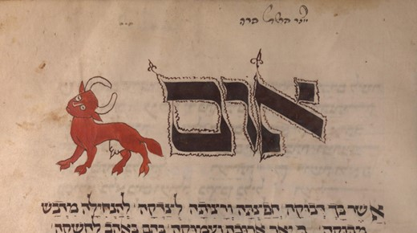

Numbers 19 — The Mister Translation

⚠ The chapter's own animal, painted by someone who read it as scripture rather than as history: a mahzor is a Jewish festival prayer book, and this leaf opens the reading of Numbers 19 for Shabbat Parah, the Sabbath of the Cow — one of four special Sabbaths kept before Passover, when this chapter is read publicly. ⚠ Two things worth seeing. The illuminator has made her unmistakably RED, which is the detail v2 turns on and the one an English reader is likeliest to skate past. And she is a COW, full-grown and heavy-bodied, not the young heifer the familiar English name promises — drawn that way in 1348 by a community reading the Hebrew word parah, several centuries before the King James Version fixed 'heifer' in the language.
{kind=link}
Numbers 19:1-6 — the red cow, not the red heifer: four of the ten versions checked here call it a heifer and six call it a cow
First, who is spoken to. Numbers 18 was the rare chapter addressed to Aaron alone — three of only five such verses in the Bible. This one opens by going straight back to the ordinary formula: and Jehovah spoke to Moses AND to Aaron. That pairing is the normal way the Torah legislates ritual: counted across the whole Hebrew Bible, God addresses Moses and Aaron together in sixteen verses, eight of them in Numbers — plus Numbers 12:4, which adds Miriam and is the only one of them that is not a law. The exception was last chapter, and it is over.
⚠ And then the famous phrase, which this translation does not print the famous way. Parah adumah is universally known in English as the red heifer — but parah is the ordinary Hebrew word for a COW, a mature one, and Hebrew has a separate word for a heifer, eglah, which this project has already spent: it is the animal Abram cuts in half at Genesis 15:9 (already on these pages), rendered 'a three-year-old heifer' there. Printing parah as 'heifer' too would collapse two distinct words into one. ⚠ And the shelf is not on the famous side. Four versions read 'heifer' — KJV, ASV, NIV and TLB (which folds vv1–2 together and calls her 'a red heifer without defect'). Six read cow. Geneva has 'a red COW', NWT 1984 'a sound red cow', and the Douay-Rheims is emphatic about it — 'a red cow OF FULL AGE', which is the Vulgate ruling a young animal out in so many words. The entire Spanish shelf says cow and none of them says heifer: RV60 «una vaca alazana», RV 1909 «una vaca bermeja», NVI «una vaca de piel rojiza». So 'red heifer' is the minority reading that happens to have won the English language.
⚠ The colour is doing more than describing her. Adumah, red, is spelled with the same three consonants as adam, a human being — and it sits four consonants away from dam, blood. Watch the chapter deal them out in order: v2 the cow is adumah, RED; vv4–5 her dam, BLOOD, is sprinkled and then burned with the rest of her; and from v11 to the end the word is adam, the HUMAN corpse that all of this exists to deal with, four times. The remedy is the colour of the problem. ⚠ Two honest cautions. Hebrew colour words are not precise, and the Spanish shelf shows the range better than the English does — alazana is a horse's sorrel, bermeja is vermilion, and the NVI gives up on a single word and says 'of reddish hide'. And the adam/adumah link is a sound-and-letter association, which is how Hebrew narrative habitually works, not an etymology anyone can prove.
Three requirements, and the third is not like the other two. She must be temimah, unblemished, and have no mum, no defect — the ordinary sacrificial standard. Then: asher lo alah aleha ol, on which no yoke has come. That one is not about soundness. It disqualifies an animal that has WORKED. Everything about her is required to be unused, which is why she is also not slaughtered at the altar and not eaten by anyone.
⚠ The rite is handed to Eleazar, and Aaron is never mentioned again. Aaron is addressed in v1 and then vanishes from the chapter; his son does the whole thing. The text does not say why, and this translation will not invent a reason — but the reason is not hard to see once vv7–10 arrive, because everyone who handles this cow ends the day unclean, and the high priest is the one man in Israel who cannot afford that. Geneva's marginal note at v3 supplies its own answer to a related puzzle: the Hebrew says only she shall be slaughtered before him, never naming a slaughterer, and Geneva fills the gap with 'By another Priest.' KJV and ASV keep the vagueness with an impersonal 'one shall slay her before his face'; NVI makes Eleazar the one giving the order, «quien ordenará que la saquen… y que en su presencia la degüellen».
Everything about the burning is wrong on purpose. It happens OUTSIDE the camp, not at the altar. The blood is not poured at the altar's base but flicked seven times toward the tent from a distance and then burned up with the carcass — blood, which every other law in the Torah says must go on the altar or into the ground, is here simply incinerated. And she is burned whole: her hide and her flesh and her blood, together with her dung. ⚠ The dung is not a detail the versions enjoy, and one of the ten will not print it: NIV substitutes an organ for the contents and reads 'its hide, flesh, blood and INTESTINES'. The Hebrew peresh is the stomach contents, not the stomach. Everyone else keeps it, down to TLB's blunt 'her hide, meat, blood, and dung' and NVI's «el excremento». Cedar, hyssop and scarlet go into the fire with her — the identical three items used at Leviticus 14 (already on these pages) to cleanse a healed person (vv4–6) and then an infected house (vv49–52). ⚠ And that chapter uses this chapter's water too: Leviticus 14:51 dips them in blood and in mayim chayyim, living water. There they are dipped and sprinkled; here they are thrown in the fire and destroyed. The same kit and the same water, used the opposite way.
Numbers 19:7-10 — the rite that makes the unclean clean makes every clean person who performs it unclean
⚠ This is the paradox the chapter is famous for, and it is stated four times without ever being explained. The priest who sprinkles the blood is unclean until evening (v7). The man who burns her is unclean until evening (v8). The man who gathers her ashes is unclean until evening (v10). And at the far end of the chapter, the man who sprinkles the finished water is unclean too (v21). Meanwhile the ashes those men produced are the one thing in Israel that can take corpse-uncleanness off somebody. The ash purifies the defiled and defiles the pure, and the text offers no reconciliation of the two — it simply legislates both, in consecutive sentences, and moves on.
Jewish tradition made that silence the point rather than a problem: this is the standing example of a choq, a decree given without a stated reason. Numbers Rabbah 19:3 puts the admission in Solomon's mouth, reading Ecclesiastes 7:23 — I said I will be wise, but it was far from me — as being about this chapter: every commandment of the Torah he had comprehended, and this one he had investigated and inquired into and it remained out of reach. ⚠ The chapter's own opening words invite exactly that reading: zot chuqqat ha-torah, THIS is the statute of the law — a phrase that occurs in only two verses in the whole Hebrew Bible, here and at Numbers 31:21 (not yet on these pages), and both times it is on Eleazar's stretch of the story. The shelf hears the register differently: ASV and NWT 1984 'statute of the law', KJV and Geneva 'ordinance of the law', NIV flattens it to 'a requirement of the law', and the Douay-Rheims reads a different noun entirely — 'the observance of the VICTIM', taking the phrase to be about the animal rather than the rule.
⚠ The water gets a startling name. Me niddah is literally water of niddah — and niddah is the word for menstrual impurity (Leviticus 15:19-24, already on these pages). The stuff that removes impurity is named after impurity. The ten versions checked here scatter across four ideas — separation, impurity, cleansing, and sprinkling — and one of them will not settle on any: ASV 'water for impurity' is the most literal and is what this translation follows; KJV 'water of separation'; NIV and NWT 1984 'water of/for cleansing'; Geneva 'sprinkling water'; RV60 «agua de purificación» against RV 1909 «agua de separación» — the two Reina-Valeras taking opposite sides. ⚠ And the Douay-Rheims renders the same two Hebrew words THREE different ways inside this one chapter: 'water of aspersion' (v9), 'water of expiation' (v13), 'water of purification' (v20). It is the clearest case on this shelf of a version deciding by context what a fixed technical term means.
V9 then calls the whole thing chattat hi, it is a sin-offering — which is strange, because nothing about this rite looks like the sin-offering of Leviticus 4 (already on these pages): no altar, no priest eating it, no blood on the horns. ASV, Geneva and NWT 1984 print 'sin offering' flatly; KJV and NIV soften it toward function — 'a purification for sin', 'it is for purification from sin' — and RV60 and RV 1909 read «es una expiación», an atonement. ⚠ Note who the law covers at v10: the children of Israel and the sojourner who sojourns among them. The most inexplicable rule in the Torah is also one of the ones stated, explicitly, to apply to foreigners on identical terms — the same even-handedness Numbers 15 piled up five times in fifteen verses.
Numbers 19:11-16 — nefesh does three different jobs in this chapter, and v13 does two of them in one verse
Corpse-uncleanness is the strongest contamination in the system and the only one that lasts a fixed seven days regardless of what you do. It spreads three ways, and vv14–16 map them: by ENCLOSURE (everyone and everything under the roof where a person dies), by CONTAINER (an open vessel with no lid bound down — the lid is what saves it), and by CONTACT in the open field, where the list is deliberately exhaustive: one slain by a sword, one dead of himself, a human bone, or a grave. ⚠ That last item is why a kohen — anyone of priestly descent — still avoids cemeteries today, and why Jewish burial societies handle what they handle. The restriction was always on the priesthood specifically, not on everyone.
⚠ And here is where a word this project settled two chapters ago earns its keep. Nefesh occurs six times in this chapter and does three unrelated jobs: it means a CORPSE (v11 l'khol nefesh adam, and again in v13), it means LIVING PEOPLE (v18, the persons who were in the tent; v22, the person who touches), and twice it is the subject of the karet formula — that soul shall be cut off (vv13, 20). This translation renders all three differently, on the rule settled at Numbers 15: 'the body' where it is a corpse, 'the person' where it is a living human being, and 'that soul' where it is the subject of a penalty. ⚠ V13 is the test case, because it does two of the three in a single sentence: everyone who touches the dead, the body of a human being who has died… that SOUL shall be cut off from Israel. The same noun, twice, twelve words apart, meaning a dead body and then a living defendant.
⚠ The shelf splits on whether to let the reader see that. NWT 1984 alone keeps the word visible in all three jobs — at v13 it reads 'a corpse, the SOUL of whatever man may die', which is strange English and is the only rendering on this shelf that shows a reader the noun is the same one. ASV splits it ('a dead person, the body of a man that hath died… that soul shall be cut off'), and so does KJV. Geneva is consistent the other way, using 'person' in both halves. ⚠ NIV removes the noun entirely — 'if THEY fail to purify themselves… THEY must be cut off' — and NVI and TLB go further, TLB reading 'shall be excommunicated', which imports a much later institution. ⚠ And the Douay-Rheims at v20 produces the oddest line on the shelf: 'his soul shall perish out of the midst of the CHURCH.' Qahal is the assembly of Israel in the wilderness; putting a church in the Sinai desert is the Vulgate's ecclesia showing through, and it is the same word-history that makes this project render the New Testament's ekklēsia as 'congregation' rather than 'church'. RV60 and RV 1909 read «aquella persona será cortada» — no soul and no church, and worth noting beside the English shelf, because the two Reina-Valeras drop the noun here where the KJV and ASV keep it.
The third day and the seventh day, twice (vv12, 19). Purification is not a single act but a bracket, and v12 states the failure case with unusual bluntness: if he does not do it on the third day, then on the seventh day he shall NOT be clean. Missing the first appointment forfeits the second. There is no provision for starting over.
Numbers 19:17-22 — v9 says ashes and v17 says DUST, and only one version on the shelf lets you see it
⚠ Two different Hebrew words, eight verses apart, and almost every version prints both as ‘ashes’. V9 gathers the efer of the cow — ashes, what is left after a fire. But v17 takes, for the unclean person, me-AFAR srefat ha-chattat: the DUST of the burning. Afar is a different noun, and it is the great one — the dust of the ground a human being is formed from, and the dust he is told he will return to. ⚠ Checked across both shelves, NWT 1984 is the only version of the ten that prints the difference: 'some of the DUST of the burning'. KJV, ASV, NIV, TLB, Geneva and the Douay-Rheims all read 'ashes' in both places, and RV60, RV 1909 and NVI all read «ceniza» in both. This is the sort of thing the NWT is repeatedly right about, and it is worth saying plainly, because the word choice is the theology: what cures a man defiled by a human corpse is dust — the same substance he is, and the substance he is going back to.
⚠ And it is mixed with mayim chayyim, LIVING water. The phrase means water from a spring or a running stream rather than a cistern — water that moves. But the literal sense is unavoidable here and the juxtaposition is the whole rite in two words: the dust of a burned body, stirred into living water, poured on a man who has touched a corpse. ⚠ The shelf mostly translates the idiom and loses the image: KJV, ASV and NWT 1984 'running water', NIV 'fresh water', RV60 «agua corriente», NVI «agua fresca». Two keep it: the Douay-Rheims 'living waters' and RV 1909 «agua viva» — the antigua keeping what the 1960 revision translated away. It matters beyond this chapter, because mayim chayyim is the phrase behind the conversation at John 4:10-14 (already on these pages), where a woman at a well is offered living water and reasonably points out that the man has no bucket.
V18 hands the hyssop to a clean man and has him sprinkle the tent, the vessels and the people — and then v19 makes the direction of the whole system explicit: the clean one shall sprinkle on the unclean. Cleanness in this book is not fragile. It is transferable, and it moves toward contamination rather than retreating from it. ⚠ Which makes v21 the sting in the tail: the one who sprinkles the water for impurity shall wash his garments; and the one who touches the water for impurity shall be unclean until the evening. The man doing the cleaning ends the day needing to wash. The chapter closes exactly where it opened, on people made unclean by the machinery of cleanness, and it never once says why.
⚠ One last structural note that is easy to miss and says something. This chapter has no internal paragraph breaks at all — a single Masoretic petuchah closes it at v22 and there is not one break inside. Numbers 18 had four. Twenty-two verses covering a slaughter, a burning, three modes of contagion and two death sentences are set down as one unbroken block, which is how the scribes read it: not a set of related rules but a single choq, taken or left whole.
Notes on this translation
Decisions. Hebrew and English agree on 22 verses, as they did last chapter. ⚠ The one rendering readers will notice is ‘red cow’ for parah adumah, against the famous 'red heifer'. Three reasons, in order of weight: parah means a cow; Hebrew's actual word for a heifer, eglah, is already in use on these pages at Genesis 15:9; and six of the ten versions checked on these shelves say cow, including the whole Spanish shelf and a Douay-Rheims that adds 'of full age' to make sure. Me niddah is 'water for impurity' with the ASV, the most literal option and the one that keeps the shock of the name. Chattat stays 'sin-offering' as at Leviticus 4; tame and tahor stay 'unclean' and 'clean'; nefesh is rendered three ways on the rule settled at Numbers 15. There is exactly one Masoretic paragraph break in the chapter, the petuchah that closes it — no internal divisions at all. Three new dictionary entries in both languages: parah, the cow; chuqqah, the decree given without a reason; and efer, the ashes. Four existing entries were rewritten to carry this chapter — niddah, tame, nefesh, and afar, which the Bible's dust already had an entry for and which this chapter sets against efer — and ezov and shani gained their first Spanish entries (chattat already had one). No new encyclopedia entries: the chapter names only Moses, Aaron and Eleazar.
Echoes paid — three. Numbers 18 planted this chapter as the one that 'continues this chapter's subject — who absorbs contamination on everyone else's behalf — by a completely different mechanism', and the mechanism turns out to be the opposite of a priesthood: not a class of people who carry the danger, but an object that carries it, made by people who are contaminated in the making. Leviticus 14's cedar, hyssop and scarlet come back at v6, used the other way round. And Numbers 15's karet formula returns twice, at vv13 and 20, with nefesh rendered 'soul' both times exactly as that chapter's note said it would be wherever the word names the subject of a penalty.
Patterns worth carrying forward. First, the ratio: tame, unclean, occurs nineteen times here and tahor, clean, seven. This is not a chapter about purity; it is a chapter about contamination, with purity as the thing being spent. Second, the chapter's key words come in near-identical pairs the versions keep flattening — efer and afar, ashes and dust; adam and adumah, human and red; parah and eglah, cow and heifer. Third, and worth watching in Numbers 20: Eleazar has now performed a rite his father was not given, and Aaron has one chapter left.
Echoes planted. Numbers 20 (now on these pages), where the water goes wrong, Aaron dies on a mountain and Eleazar is vested in his clothes; Numbers 31:19-24 (not yet), the only other place this water is actually used, and the only other verse with the phrase chuqqat ha-torah; Hebrews 9:13 (not yet), which cites 'the ashes of a heifer sprinkling those who are defiled' as the lesser case in an argument; and Hebrews 13:11-13 (not yet), which builds on the detail that the body was burned OUTSIDE the camp.
⚠ A note on order: Numbers stands on these pages at chapters 1, 2, 3, 4, 5, 6, 7, 8, 9, 10, 11, 12, 13, 14, 15, 16, 17, 18, 19, and 20. Chapters 21–36 remain the open sequence.